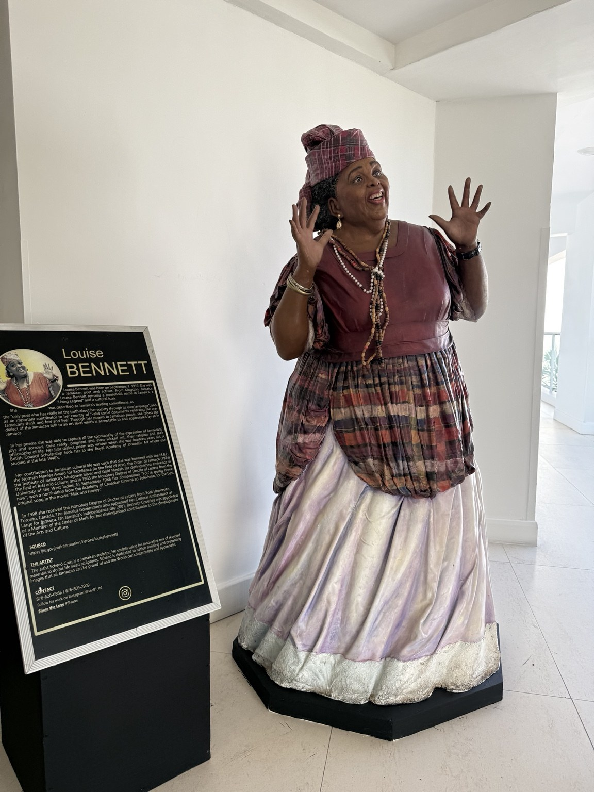

Jamaica
Miss Lou
Portrait sculpture

A sculptural representation of Jamaican cultural icon Louise Bennett-Coverley, better known as Miss Lou.
Jamaica
Portrait sculpture

A sculptural representation of Jamaican cultural icon Louise Bennett-Coverley, better known as Miss Lou.